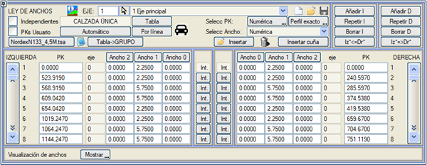
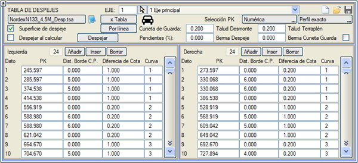
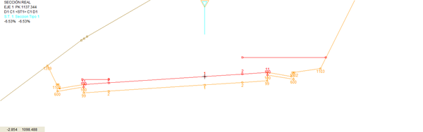
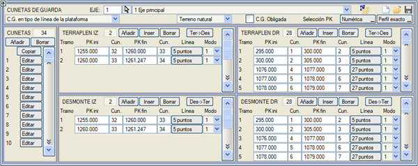
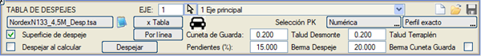
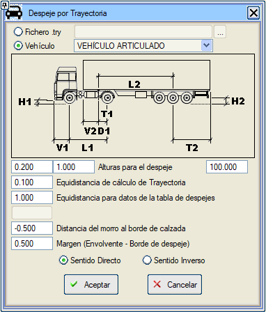
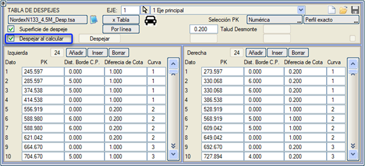

| |
|
GÖRÜŞ MESAFESİ TABLOSU
|
Rüzgar santrallerine erişim yollarında genişletme ve görüş mesafesi hesaplama aracı. Demo/Despejes klasöründeki kurulumla birlikte, bize yardımcı olabilecek bir Despejes.isa örneği bulunmaktadır. Genişlikler menüsünde, NordexN133_4,5.tsa genişletme tablosu kullanılarak Tabloya Göre Genişlikler hesaplanmıştır. Bu tablo, kurp yarıçapına ve gelişimine bağlı olarak iç ve dış genişlik ve genişletme tablosu içerir. Ayrıca genişletmeye geçişler için bir tablo da içerir. 
Boykesit > Yardımcı Programlar > GÖRÜŞ MESAFESİ TABLOSU menüsünde bulunan diyalog kutusuna giriyoruz. 
Görüş mesafeleri, KM, Kenara Mesafe, Kot Farkı ve kurp numarası listeleridir. Herhangi bir KM için, platformun son noktasına olan bir mesafeyi ve yarma şevi veya arazi ile kesişmemesi gereken bir yüzeyi tanımlayan bir kot farkını belirtirler. Bu kutuda, görüş mesafelerini, kurp yarıçapına ve gelişimine bağlı olarak hesaplamak için özel olarak tasarlanmış ikinci bir genişletme tablosu olan NordexN133_4,5M_Desp.tsa kullanılarak Tabloya Göre aracı kullanılmıştır. Ayrıca, kurpların iç veya dış tarafı için farklı görüş mesafesi yüksekliği ekler. Kütüphanede, sırasıyla Tabloya Göre Genişletmeler ve Tabloya Göre Görüş Mesafeleri hesaplamasında kullanılmak üzere DesarrSG155.tsa ve DesarrSG155_Desp.tsa tabloları bulunmaktadır. Bunlar, kurbun sağa (pozitif yarıçaplar) veya sola (negatif yarıçaplar) olmasına bağlı olarak farklı genişletme değerleri tanımlama özelliğine sahiptir. Böylece her genişletme değeri şunlara bağlıdır:
Görüş mesafesi yüzeyi seçeneği, hesaplandığında enkesite, arazi veya yarma şevleriyle kesişmemesi gereken sanal görüş mesafesi yüzeyini ekler. 
Kütüphanede, bu yüzeyi 3D olarak da çizen bir Despeje.lil dosyası bulunmaktadır. Görüş Mesafesi Sağla aracı, tüm görüş mesafesi tablosunu analiz eder ve yarma ile kesişmeyi önlemek için gerekli görüş mesafesi palyesini ekler. Görüş mesafesi tablosunda zaten veri varsa ve görüş mesafesi palyeleri tanımlanmışsa ( Görüş Mesafesi Sağla komutuyla), görüş mesafesi palyesi araziye çıksa ve ardından son noktası tekrar arazinin altına düşse bile kesit kesintiye uğramaz. Bu komut ayrıca, dolgu bölgelerinde görüş mesafesi yüzeyinin araziyle kesişimini analiz eder ve gerekirse bu bölgeleri, araziyi gerektiği kadar kazan koruma hendekleri kullanarak temizler. Demo\Despejes klasöründe bulunan despejes.isa örneğinde bu durum gösterilmektedir: 1077-1099 KM'leri arasında, kurbun sağ tarafında azaltılmış bir dolgu vardır, arazi dolgu şev dibinden dik bir eğimle çıkar ve görüş mesafesi yüzeyini keser. Burada, temizleme sırasında oluşturulabilecek koruma hendekleri için yarma şevleri ve dolgu şevleri tanımlanabilir. Görüş Mesafesi Sağla aracı, bu bölgeleri temizlemek için sağ dolguda birkaç kesimi Koruma Hendekleri tablosuna dahil etmiştir. 
Görüş mesafesi palyesi veya Koruma Hendeği palyesi için iki eğim tanımlama imkanı. 
Görüş mesafeleri için koruma hendeğini yarma görüş mesafesi palyeleri gibi yeniden kodla kutucuğu işaretlenerek, bir görüş mesafesi palyesinden bir koruma hendeğine ardışık iki enkesit arasında bir sıçrama olduğunda şevlerde süreklilik sağlanabilir. simgesi aracılığıyla, bir sürüş simülasyonu yaparak görüş mesafesi tablosu oluşturma imkanımız vardır. Araç, önceden tanımlanmış şablonlardan herhangi biri veya bir .try dosyasında kaydedilmiş değiştirilmiş bir şablon olabilir. Sürüş simülasyonu, aracın burnunu kurpların dış tarafındaki platform kenarına yaklaştırarak yapılır. Sürüş Simülasyonları ile görüş mesafesi hesaplamasında, kurbun iç veya dış tarafında olmamıza bağlı olarak görüş mesafesi için iki farklı değer girilebilir. Ayrıca, sürüş simülasyonu zarfı üzerinde görüş mesafesi için bir pay tanımlanır. Kurbun iç ve dış tarafındaki görüş mesafesi yükseklikleri verileri şu değerle tamamlanabilir: İç taraf için yüksekliği kullanarak maksimum görüş mesafesi genişliği. Bir kurbun içinde bu değerden daha büyük bir görüş mesafesi genişliği ortaya çıkarsa, dış taraf için kullanılan yükseklik değerine değiştirilir. Sürüş simülasyonu hesaplaması ve görüş mesafesi tablosunun aralıkları için kutucuklara veri girebiliriz. 
Güzergah yönünü seçme imkanı: İleri veya Geri. Dinamik Görüş Mesafesi Yöntemi: Demo/Despejes klasöründeki kurulumla birlikte, bize yardımcı olabilecek bir Despejes_Dinamico.isa örneği bulunmaktadır. Bu yöntem, Hesaplarken Görüş Mesafesi Sağla seçeneğini kullanır; bu seçenek, Görüş Mesafesi Palyelerinde veya Koruma Hendeklerinde veri oluşturmayı gerektirmez. Bu tablolarda veri varsa, bunları silmeniz önerilir; görüş mesafeleri dinamik olarak hesaplanır. Bir enkesit hesaplandığında veya gerçek kesitte görüntülendiğinde, görüş mesafesini karşılamak için kesit değiştirilir. Görüş mesafesi yüzeyi yarma şevini kestiğinde, bu yüzeyin yüksekliğinde temizlenir. Kesitin son noktasının arkasında araziyi kestiğinde, arazi boyunca ara noktalar eklenmez, bunun yerine hesaplanan görüş mesafesi palyesiyle doğrudan nokta eklenir.  |